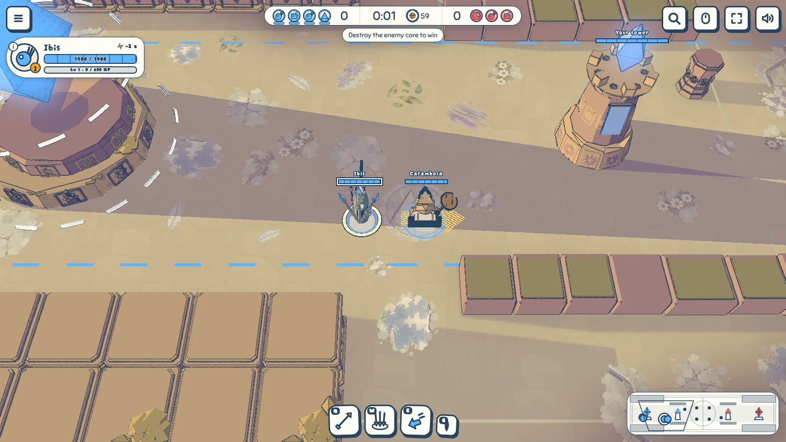
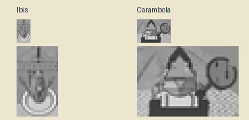
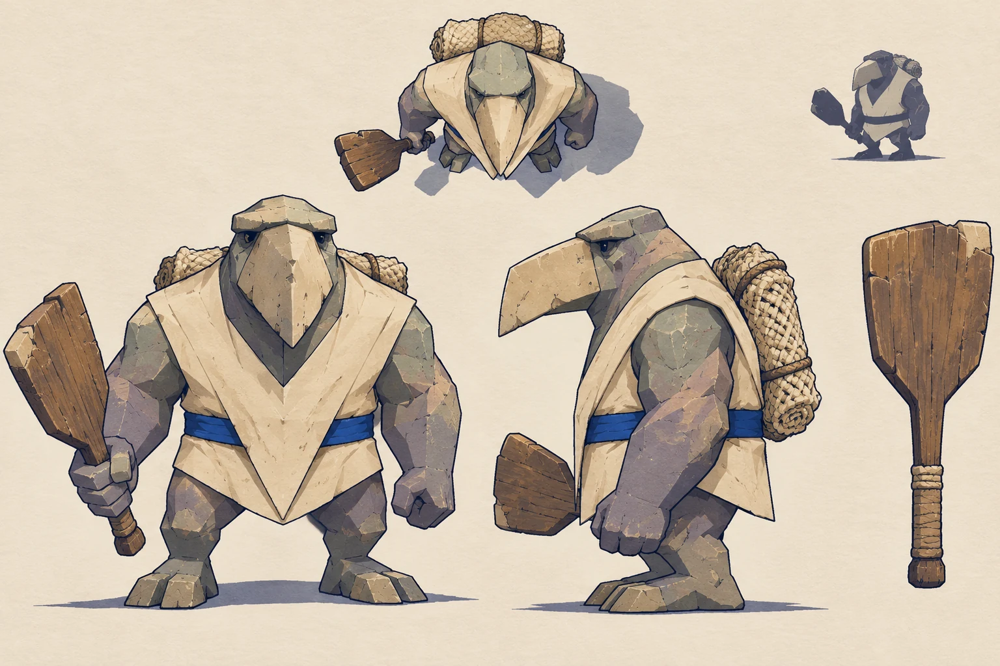
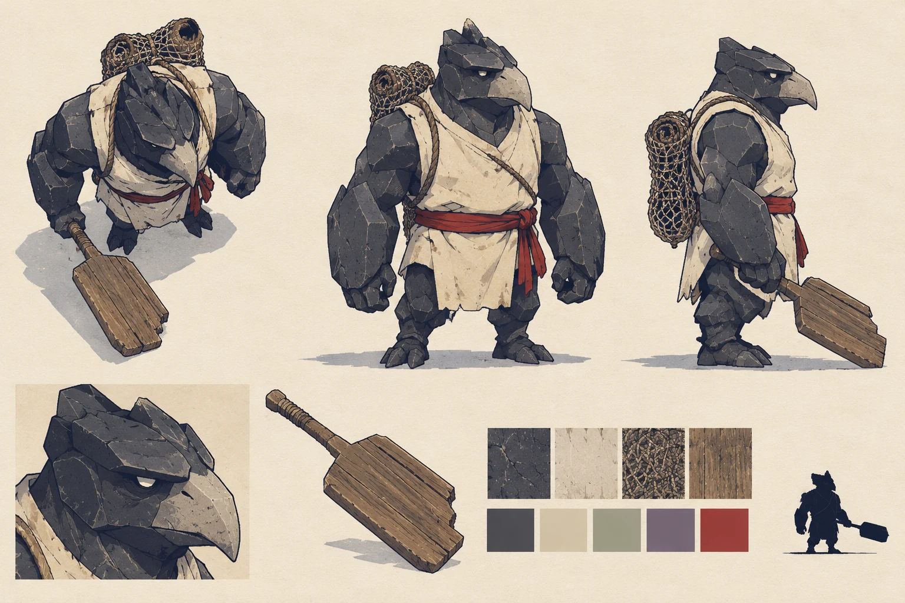

Ibis and Carambola
Ibis carries the hunter's hooked beak and three fanned arrows. Carambola takes his broad stone beak and triangular tunic from study A; study B remains here for comparison.
The court


Study A
The chosen stone wedge and cream triangle. Prompt

Study B
The basalt alternative. Prompt
